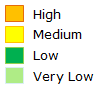
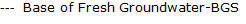
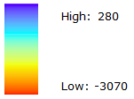

Groundwater Information Center Map Interface
Groundwater Information Center Desription of Interactive Map Capabilities
County Boundaries
Groundwater Basins

GWMP Statewide

Basin Priorty Rank

Layer List:
Measurements
Contours
Color Ramp
Layer List :
Measurements
Contours
Color Ramp
Depth to Groundwater Data
CA DOGGR Data
Water Resource Data
BFW - BGS (ft)


BFW - MSL (ft)
